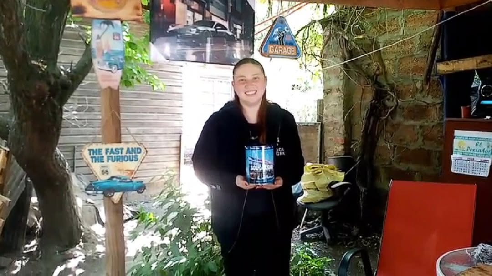
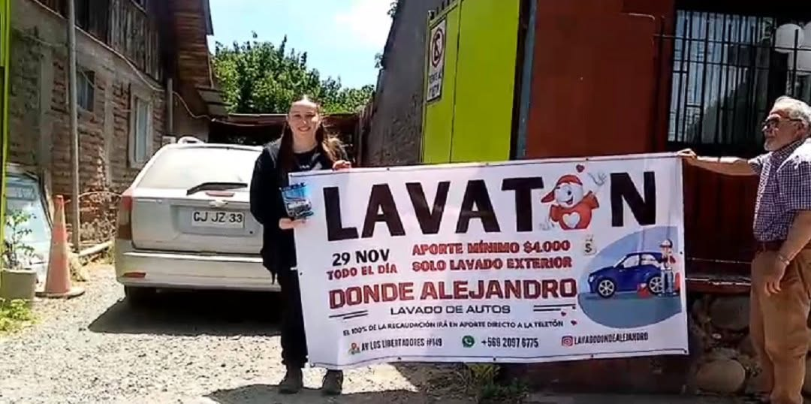
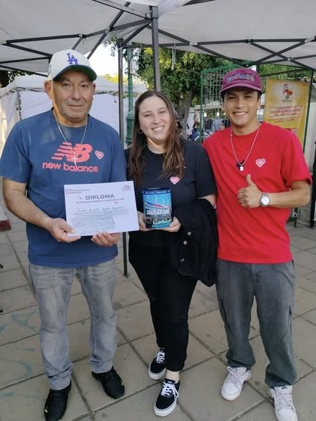
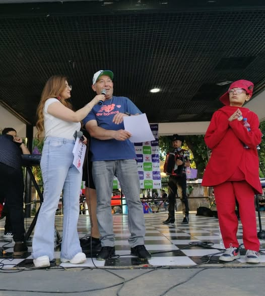
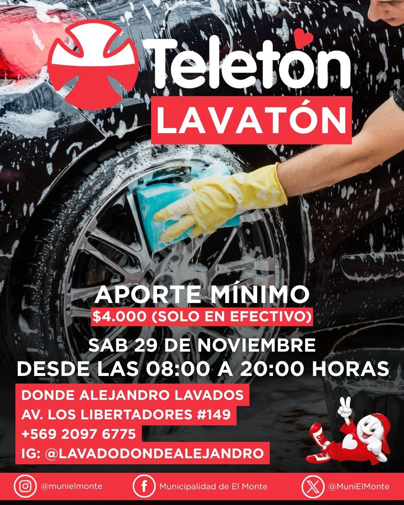

Bienvenidos a Donde Alejandro
Somos una empresa familiar ubicada en El Monte, especializada en lavado de autos, lavado de tapiz, limpieza de interiores y servicios de detallado automotriz, entregando calidad y compromiso a nuestros clientes.
¿Por qué elegirnos?
- Atención personalizada
- Productos de calidad
- Precios convenientes
- Experiencia en limpieza automotriz
- Participación en actividades solidarias
Nuestros Servicios
Lavado de Autos y Tapiz
Lavado de auto, encerado, lavado de motor, aspirado, silicona y renovador de gomas.
Lavado de Hogar
Limpieza de alfombras, tapetes, muebles y colchones.
Actividades de la Empresa
Lavado de Autos Donde Alejandro participa en actividades solidarias y comunitarias apoyando campañas como la Teletón.




